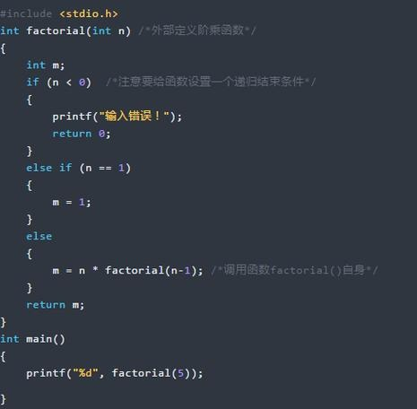
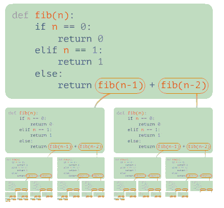

读完这篇文章轻松理解递归算法
对于很多编程初学者来说，递归算法是学习语言的最大障碍之一。很多人也是半懂不懂，结果学到很深的境地也会因为自己基础不好，导致发展太慢。
可能也有一大部分人知道递归，也能看的懂递归，但在实际做题过程中，却不知道怎么使用。今天，我们就来说一说递归算法的使用。
1 什么是递归
递归，在数学与计算机科学中，是指在函数的定义中使用函数自身的方法。也就是说，递归算法是一种直接或者间接调用自身函数或者方法的算法。
通俗来说，递归算法的实质是把问题分解成规模缩小的同类问题的子问题，然后递归调用方法来表示问题的解。
2 递归的基本原理
第一、每一级的函数调用都有自己的变量。
第二、每一次函数调用都会有一次返回。
第三、递归函数中，位于递归调用前的语句和各级被调用函数具有相同的执行顺序。
第四、递归函数中，位于递归调用后的语句的执行顺序和各个被调用函数的顺序相反。
第五、虽然每一级递归都有自己的变量，但是函数代码并不会得到复制。
3 递归的优缺点
3.1 优点
实现简单；
可读性好；
3.2 缺点
递归调用，占用空间大；
递归太深，易发生栈溢出；
可能存在重复计算；
4 递归的三大要素
4.1 明确你这个函数想要干什么。先不管函数里面的代码什么，而是要先明白，你这个函数的功能是什么，要完成什么样的一件事。
4.2 寻找递归结束条件。我们需要找出当参数为啥时，递归结束，之后直接把结果返回，请注意，这个时候我们必须能根据这个参数的值，能够直接知道函数的结果是什么。
4.3 找出函数的等价关系式。我们要不断缩小参数的范围，缩小之后，我们可以通过一些辅助的变量或者操作，使原函数的结果不变。
5 递归的过程

具体地说，如果递归函数调用自己，则被调用的函数也将调用自己，这将无限循环下去，除非代码中包含终止调用链的内容。通常的方法将递归调用放在if语句中。例如，void类型的递归函数recurs()的代码如下：

用文字再现这段代码块的内容：
只要if语句为true，每个recurs()调用都将执行statement1 ，然后再调用recurs()，而不会执行statements2 。当前调用结束后，程序控制权将返回给调用它的recurs()，而该recurs()将执行其statements2 部分，然后结束，并将控制权返回给前一个调用，依次类推。
6 递归的使用
递归的强大之处在于它允许用户用有限的语句描述无限的对象。因此，在计算机科学中，递归可以被用来描述无限步的运算，尽管描述运算的程序是有限的。这一点是循环不太容易做到的。
编写正确的递归算法，一定要有”归“的步骤，也就是说递归算法，在分解问题到不能再分解的步骤时，要让递归有退出的条件，否则就会陷入死循环，最终导致内存不足引发栈溢出异常。
下面，我们通过两个例子来学习一下，递归的使用：
例一：递归求阶乘
例二：递归求斐波那契数列

从上面的步骤我们可以清晰的看到递归算法的第一步是分治，把复杂的大的问题，给拆分成一个一个小问题，直到不能再拆解，通过退出条件retrun，然后再从最小的问题开始解决，只到所有的子问题解决完毕，那么最终的大问题就迎刃而解。
7 递归的优化方法
递归问题中想到思路本身不非常难，真正的难点在于如何优化。
7.1 考虑是否重复计算
如果你使用递归的时候不进行优化，是有非常非常非常多的子问题被重复计算的。因此，使用递归的时候，必要须要考虑有没有重复计算，如果重复计算了，一定要把计算过的状态保存起来。
7.2 考虑尾递归
对于递归的问题，我们一般都是从上往下递归的，直到递归到最底，再一层一层着把值返回。
不过，有时候当n比较大的时候，例如当n=10000 时，那么必须要往下递归10000 层直到n<=1 才将结果慢慢返回，如果n太大的话，可能栈空间会不够用。这个时候，就可以用尾递归优化来解决。
顾名思义，尾递归就是从最后开始计算，每递归一次就算出相应的结果，也就是说，函数调用出现在调用者函数的尾部，因为是尾部，所以根本没有必要去保存任何局部变量。直接让被调用的函数返回时越过调用者，返回到调用者的调用者去。
有的人刚接触算法的时候，一直都惧怕递归，也很少或者说几乎就不写递归的代码。但其实学习了以后，发现递归还是挺可爱的。就像在数学找一组数字的规律一样，可以锻炼我们的思维。
本页共44段，1822个字符，5135 Byte(字节)